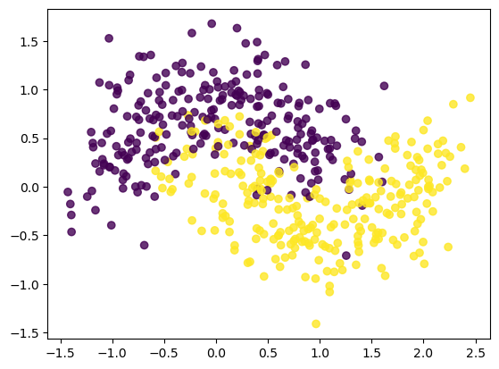
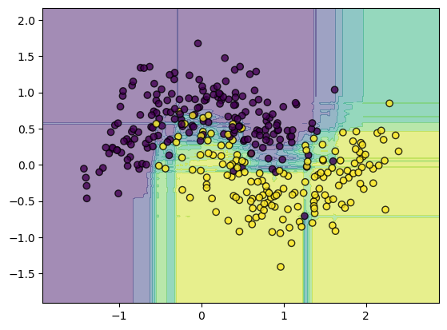
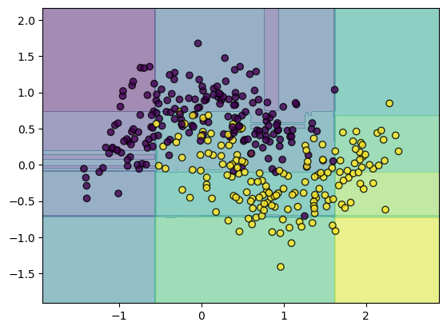
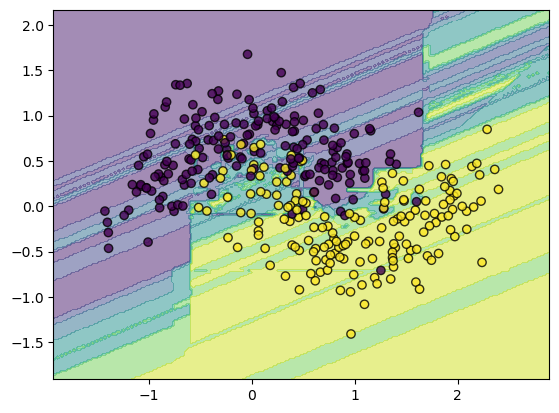

Sklearn : Ensemble Learning
Dans ce chapitre, nous découvrirons les approches d'apprentissage par ensemble, qui combinent plusieurs modèles pour améliorer les performances. Nous explorerons le Voting Classifier, le Bagging, le Boosting, et le Stacking, avec des exemples pratiques pour chaque méthode.
Sommaire :
import numpy as np
import matplotlib.pyplot as plt
from sklearn.datasets import make_moons
from sklearn.model_selection import train_test_split
from matplotlib.colors import ListedColormap
def plot_decision_boundary(clf, X, y, axes=[-1.5, 2.45, -1, 1.5], alpha=0.5, contour=True):
h = .02
x_min, x_max = X[:, 0].min() - .5, X[:, 0].max() + .5
y_min, y_max = X[:, 1].min() - .5, X[:, 1].max() + .5
xx, yy = np.meshgrid(np.arange(x_min, x_max, h),
np.arange(y_min, y_max, h))
Z = clf.predict_proba(np.c_[xx.ravel(), yy.ravel()])[:, 1]
Z = Z.reshape(xx.shape)
plt.contourf(xx, yy, Z, alpha=.5)
plt.scatter(X[:,0], X[:,1], c=y, alpha=0.8, edgecolors='k')
X, y = make_moons(n_samples=500, noise=0.3, random_state=0)
plt.scatter(X[:,0], X[:,1], c=y, alpha=0.8)
X_train, X_test, y_train, y_test = train_test_split(X, y, test_size=0.3, random_state=0)

1. Voting Classifier
from sklearn.linear_model import SGDClassifier
from sklearn.tree import DecisionTreeClassifier
from sklearn.neighbors import KNeighborsClassifier
from sklearn.ensemble import VotingClassifier
model_1 = SGDClassifier(random_state=0)
model_2 = DecisionTreeClassifier(random_state=0)
model_3 = KNeighborsClassifier(n_neighbors=2)
model_4 = VotingClassifier([('SGD', model_1),
('Tree', model_2),
('KNN', model_3)],
voting='hard')
for model in (model_1, model_2, model_3, model_4):
model.fit(X_train, y_train)
print(model.__class__.__name__, model.score(X_test, y_test))
-
SGDClassifier 0.84
DecisionTreeClassifier 0.86
KNeighborsClassifier 0.86
VotingClassifier 0.8733333333333333
2. Bagging
from sklearn.ensemble import BaggingClassifier, RandomForestClassifier
model = BaggingClassifier(base_estimator=KNeighborsClassifier(),
n_estimators=100)
model.fit(X_train, y_train)
model.score(X_test, y_test)
-
0.88
model = RandomForestClassifier(n_estimators=100)
model.fit(X_train, y_train)
model.score(X_test, y_test)
-
0.8733333333333333
plot_decision_boundary(model, X_train, y_train)

3. Boosting
from sklearn.ensemble import AdaBoostClassifier, GradientBoostingClassifier
model = AdaBoostClassifier(n_estimators=100)
model.fit(X_train, y_train)
model.score(X_test, y_test)
-
0.88
plot_decision_boundary(model, X_train, y_train)

4. Stacking
from sklearn.ensemble import StackingClassifier
model = StackingClassifier([('SGD', model_1),
('Tree', model_2),
('KNN', model_3)],
final_estimator=KNeighborsClassifier())
model.fit(X_train, y_train)
model.score(X_test, y_test)
-
0.8666666666666667
plot_decision_boundary(model, X_train, y_train)
